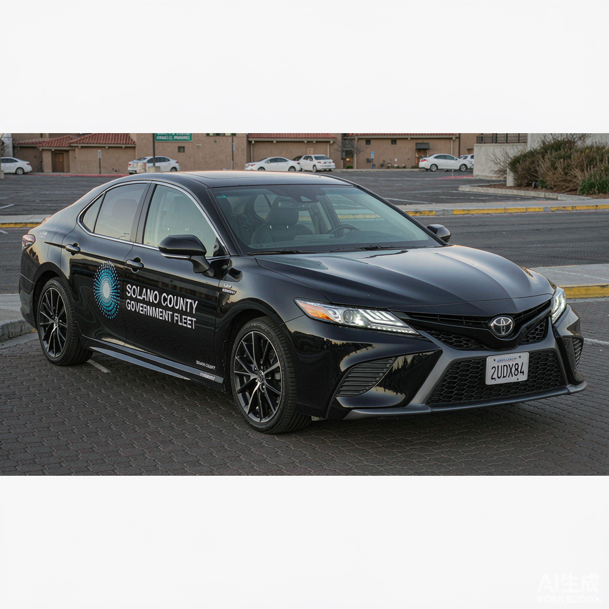

10:24
异常上报
5
异常上报
第 5 步 · 共 7 步
车辆信息

车牌号
苏A·12345
品牌型号
丰田 凯美瑞 2.5G
车身颜色
黑色
张三
工号 10086
GPS定位
正在获取当前位置…
--
异常类型
无
本次行程无异常
事故
交通事故碰撞
车辆损坏
部件损坏故障
其他
其他异常情况
默认「无」表示本次行程无异常；如发生异常，请如实选择异常类型并补充材料。
上传异常照片
点击拍摄
已上传
0
/ 9 张 · 支持相机拍摄或从相册选择
填写异常说明
0
/ 200
提交异常上报
选择「无」可直接提交；其他类型需上传异常照片并填写异常说明（5-200 字）